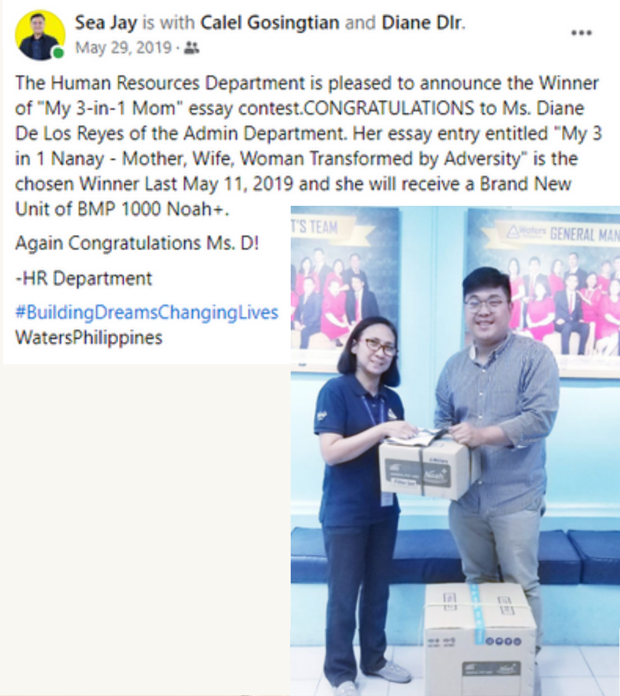

Life took its unusual turn when my father was diagnosed with lung cancer, which left my mother to take on the heavy responsibility of being the provider in the family. From a plain housewife who did not finish college, she juggled two jobs to keep the family afloat and ensure that the four of us finish college after my father’s death a little more than a year after the cancer diagnosis.
When my father died, my sister was in third year college, me in second year college and my two brothers were both in fourth year high school.
My mother thought that it would have made a big difference had she finished college. But with her firm determination to give us a better chance in life, my siblings and I all finished college. My sister is a licensed nurse and my two brothers, one a licensed civil engineer and the other a licensed physical therapist.
During the last three and a half months of my father’s illness (from the lungs, the cancer cells went to the bones), my mother stayed with my father in his hometown in Batangas where he spent his last days. She personally cared for my father as he battled with bone cancer while my siblings and I visited them every weekend. The four of us were left under the care of the priest who officiated their marriage.
She stayed on with the man whom she vowed "to have and to hold from this day forward, for better, for worse, for richer, for poorer, in sickness and health, until death do us part."
My mother evolved into a woman she has become now ----- a woman of fortitude and character who, after a sudden twist in life, came out renewed. The school of life taught her that adversity is part and parcel of our existence, and that God has equipped us with the necessary strength and grace to overcome it
In sum, she instilled in us, her children, the importance of education and the values of hard work and persistence. More than giving us life and the best education, she showed us the way to navigate the ups and downs of life.